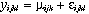
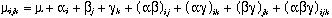
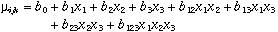
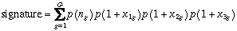
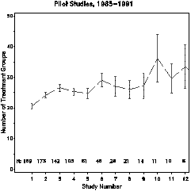

The design of the project thus requires the student to balance the efficiency and costs of data collection against the precision of estimation and power of hypothesis tests. The paper details the pedagogical features which support this design, describes how they are implemented, and summarizes the results of students work over a number of years with this project.
This paper describes a course project I have used for some years in an intermediate-level experimental design course. The project is designed to simulate the statistical and the practical issues in real research in as many ways as possible, within the constraints of conducting the project in a large class (50 - 75 students). Each student is given a "research budget" to use to design and conduct experiments. Each experiment has a set of costs associated with it. There is a specified cost for each new experimental design, for each treatment group, and for each observation. Running the experiment yields data simulated from a model known only by the instructor. Not only does each student receive different data, but the true experimental effects differ from student to student. The experimental context is that of a three-factor design, and the student receives a "fee" for each effect (main effect or interaction) which he or she correctly identifies as being present or absent.
Thus, the students are directly motivated to try to discover as much about the nature of the effects in their data while trying to control the costs of data collection. The payoffs for the projects, however, are designed so that the rewards for discovering true effects greatly outweigh the marginal costs of data collection.
Section 2 describes the key pedagogical features of the project. The third section of the paper gives additional details and describes how the project is implemented. Section 4 summarizes some results of the student's work on this project.
The research context involves three possible experimental factors, two of which are quantitative. Students run one or more pilot studies to determine which of the seven main effects and interactions appear to have non-null effects and to select the levels of the independent variables and sample sizes for their main study. The research situation is as follows:
You have set up a small statistical consulting business, specializing in research design and analysis. A psychologist, Dr. John Thomas, who is studying animal learning, comes to you with the following problem:
Starting with the work by Duncan (1949) a long series of studies have shown that electroconvulsive shock (ECS) given to an animal soon after learning a maze interferes with performance on the task, when the animal is tested the next day (after recovery from the effects of the shock). The usual sequence of events in an experiment is shown in Figure 1. Moreover, the shorter the time interval (DELAY) between the learning experience and the shock, the greater is the disruption in performance that appears on the subsequent test. Thus, the usual effects of ECS produce low scores at short delay intervals, and increasing scores as the interval increases, up to a time of one hour.
The usual explanation for this phenomenon is that whatever is learned by the animal in the maze requires some time to consolidate. When ECS is given shortly after learning, the memory trace has not yet consolidated, and is disrupted by the shock. The longer the DELAY between learning and ECS, the less the memory trace can be disrupted.
+-------+ +---+ +--------+ | learn | --DELAY-- |ECS| --recovery-- | retest | | MAZE | +---+ +--------+ +-------+ | adrenaline | +-- DOSE given get SCORE -+
Figure 1: The John Thomas study, experimental procedure
However, Dr. Thomas believes that that the effects of ECS can be reduced by administering adrenaline to the animal before the learning task. He asks you to help him design and analyse an experiment to help study the effects of adrenaline on ECS in a maze learning task. The following factors are to be studied.
- DOSE - Amount of adrenaline given. Allowable doses are in the range 0 - 30 mg/kg body weight in steps of 10 mg/kg; 0 = control condition.
- DELAY - The time interval between learning and administration of ECS (0 - 60 min). Your design may include any number of DELAY values within this range.
- TASK - There are two mazes which can be used in this study: An easy maze with only a few blind alleys, and a hard maze. In the study, these are referred to as 'EASYMAZE' and 'HARDMAZE'. The main reason for including two mazes in the study are to determine whether the effects of DOSE of adrenaline and DELAY of ECS differ in the two types of maze.
data design; run=0; * pilot study; nobs=4; * observations per group; input task $ dose delay; cards; EASYMAZE 0 0 EASYMAZE 0 60 EASYMAZE 3 0 EASYMAZE 3 60 HARDMAZE 0 0 HARDMAZE 0 60 HARDMAZE 3 0 HARDMAZE 3 60 ; %GETDATA;The last line, %GETDATA, invokes a SAS macro program which reads the student's DESIGN data set and generates the data for that student, storing the results in a permanent SAS data set, called PROJECT.RUN0. The program produces a printed summary of the study design ( Figure 2) and a printed listing of the generated data ( Figure 3).
John Thomas ECS Study
RUN: 0
Levels: 2,2,2 (Delay,Dose,Task)
Run on: Tuesday, August 13, 1991 at 16:38:49
For: YSPY7429 (Userid: 7429)
GROUP DELAY DOSE TASK NOBS
1 0 0 EASYMAZE 4
2 60 0 EASYMAZE 4
3 0 3 EASYMAZE 4
4 60 3 EASYMAZE 4
5 0 0 HARDMAZE 4
6 60 0 HARDMAZE 4
7 0 3 HARDMAZE 4
8 60 3 HARDMAZE 4
----
Total observations 32
Your data have been saved in PROJECT.RUN0
The cost of data collection is $17.00
For more complex designs, the student can use SAS programming statements to construct the DESIGN data sets. A 5 x 4 x 2 design, with 5 observations per cell, for example, is specified by these statements:
data DESIGN;
run =1; * main study;
nobs=5;
do DELAY= 0 to 60 by 15 ;
do DOSE = 0 to 3;
do TASK = 'EASYMAZE','HARDMAZE';
output;
end;
end;
end;
%GETDATA;
Generated data from your Design GROUP SUBJ DELAY DOSE TASK LOG SCORE 1 1 0 0 EASYMAZE DH 0 1 2 0 0 EASYMAZE 2 1 3 0 0 EASYMAZE 0 1 4 0 0 EASYMAZE 23 2 1 60 0 EASYMAZE 105 2 2 60 0 EASYMAZE EI 117 2 3 60 0 EASYMAZE 144 2 4 60 0 EASYMAZE 144 3 1 0 3 EASYMAZE 108 3 2 0 3 EASYMAZE 154 3 3 0 3 EASYMAZE 157 3 4 0 3 EASYMAZE 131 4 1 60 3 EASYMAZE 227 4 2 60 3 EASYMAZE 170 4 3 60 3 EASYMAZE 226 4 4 60 3 EASYMAZE 138 5 1 0 0 HARDMAZE 16 5 2 0 0 HARDMAZE 66 5 3 0 0 HARDMAZE 0 5 4 0 0 HARDMAZE 85 6 1 60 0 HARDMAZE 118 6 2 60 0 HARDMAZE SA 166 6 3 60 0 HARDMAZE 150 6 4 60 0 HARDMAZE 106 7 1 0 3 HARDMAZE 53 7 2 0 3 HARDMAZE 105 7 3 0 3 HARDMAZE 91 7 4 0 3 HARDMAZE 79 8 1 60 3 HARDMAZE EE 127 8 2 60 3 HARDMAZE 129 8 3 60 3 HARDMAZE 158 8 4 60 3 HARDMAZE 160
There are two practical implications of this arrangement for students' data collection. First, there are no new technical skills for the students to learn in order to work on the project. Second, there is no need for students to enter data for analysis: the data generated from an experimental design is immediately available in the same data analysis environment the student has used throughout the course. As a result, students can focus their attention and effort at a much higher level than would be possible with "real data" projects.
.bf quote From previous research, Dr. Thomas estimates that it costs about $5.00 to setup any experimental run or pilot study, plus an extra $.50 to setup each different experimental treatment combination ('GROUP') included in an experiment. In addition it costs $0.25 for each animal tested. Dr. Thomas has a total of $1000 to spend on this study, including a consulting fee of $500 for you. He proposes that if the total costs of your experimental runs (see below) exceed $500, the difference will be subtracted from your fee; if your costs are less than $500, you get the difference, which will be translated into "points" on your project.Students are initially apprehensive about this aspect of the project. They worry about making mistakes and it is easy for them to see the budget dwindle, but hard to know whether their conclusions are correct. In order to partially allay these concerns, students are given a three-week trial period to become familiar with the data-collection process. During this time, up to two pilot studies may be conducted without cost. In addition, the effect sizes for non-null effects in each students data are set so that most students should be able to conduct their data collection well under-budget.As you can see, Dr. Thomas is a firm believer in the power of reinforcement to influence behavior, including yours. To give you added incentive, he promises to pay you $200 for each correct statistical decision, plus a $200 bonus for each new fact you discover (beyond the usual ANOVA results), or for promising leads you provide for future research.
Nevertheless, I have found it useful to provide the opportunity for some students to go beyond the standard design and analysis tasks that are required by the foregoing. There is a good deal of emphasis in the course on exploratory data analysis, graphical display and methods for detecting influential observations or outliers. So it seemed natural to add some potential outliers to the data as "new facts" which students could discover. The project instructions include the following:
On the basis of past experience, Dr. Thomas estimates that approximately 4-6% of scores have more than the usual amount of what he calls 'slop' in them, owing to a variety of uncontrolled factors or experimental mishap. His practice in the past has been to note the occurrence of any atypical aspects of the data collection in a log book when the animal is run.It turns out that three of the logbook codes are in fact systematically associated with an error component about 4 times the MSE in the data. All six logbook codes, however, are generated with approximately the same low frequency (4-6%), so students who take up the challenge must find a way to distinguish the real outlier effects from the red herrings.Some of these notations are later found to be associated unusual data values; others are not. Most weird scores turn out to have some notation in the log book. However, not all notations mean that the score is weird. Because Dr. Thomas finds truly weird scores to be troubling, he is prepared to reward you if you can identify the log book notations which seem to be associated with really weird observations. In your data, you will get the comments transcribed from Dr. Thomas' log book, using the following codes:
- Code
- Description
- AA
- Animal appeared Agitated after ECS
- AF
- Apparatus Failure (even if minor)
- DH
- Difficulty in Handling the experimental animal
- EE
- Experimenter Error - any deviation from the procedure.
- EI
- Experimenter ill or Indisposed
- SA
- Animal in a state of high Sexual Arousal
Students carry out their pilot runs to determine an appropriate design for the main study. In the process they observe that some effects may differ from one pilot study to the next, but they usually attribute any inconsistency to differences in the designs or small sample size. After the main study, they re-run the same design as a replication (RUN=2), and they must present a single set of conclusions in the work they submit, based on the results of both.
If their design has sufficient power (and they have not been terribly unlucky), the main conclusions will agree. Nevertheless, as they probe the more subtle features of their data (high-order interactions, single degree-of-freedom tests, tests of linear and quadratic trends), they see quite graphically that not all of the results of a single study can be expected to turn out identically in a replication. The requirement to report a single set of conclusions can be sobering, but teaches an important lesson more effectively than mere words.
where y sub ijkl is the experimental score of subject l in treatment combination (i, j, k), mu sub ijk is the population mean for that cell, and epsilon sub ijkl is the random error, distributed normally, N ( delta , sigma² ) and delta is non-zero for outliers, but zero otherwise. Extension to other designs is immediate.
It is important, however, that students receive the same data if they merely rerun the identical design, because students typically run a series of analyses on their data. This is achieved by making the seed for the random number generator depend on the student's user account number ("userid") and the experimental run. For example, if USERID is a 4-digit number which is unique for each student, the random seed can be calculated as
seed = 2*(10000*run + userid) + 10001;to yield data which differs for each student and each experimental run, but which is unchanged if the same design is rerun. Note that this computation of the seed value yields the same error components (e sub ijkl) for different designs on a given student-run, but the systematic parts (mu sub ijk) change with the design, so the student will perceive the data to vary. A better procedure is to calculate the seed value from the design signature, described below, but this would require two passes through the DESIGN data set.
For a three-factor design the usual parameterization in terms of main effects and interactions is, in the usual notation,

In order to generate different main effects and interactions for different students, one could specify the non-zero terms in Equation (1) in several different configurations. It is not necessary to create a distinct set of effects for each student. Rather, a collection of m effect sets (for example, 2 <= m <= 5) can be created. The particular set of effects selected for a given student is determined by some computation based on the student's userid; for example, if d is the sum of digits in the student's userid, mod (d, m) indexes the effect sets, numbered 0 through m-1.
In the case of quantitative factors, such as DOSE and DELAY in the John Thomas experiment, some considerable simplification is possible by parameterizing mu sub ijk in terms of simple polynomials. For example, letting ( x sub 1 , x sub 2 , x sub 3 ) denote the values of DOSE (0-3), DELAY (0-60), and TASK (0, 1), and restricting all interactions to linear-by-linear form, the cell means can be parameterized as,

(2)
For each parameterization the cell means are determined by the eight coefficients in equation (2). In each of the m effect sets, some coefficients are set to zero, giving null effects; the non-zero values are determined (by trial and error) to give approximately equal range of cell means in each effect set. Finally, the error variance sigma sup 2 is determined so that a reasonable sample size will give a power of at least .90 for detecting all non-null effects.
On the VM/CMS system SAS is run by invoking SAS EXEC, a command program in the REXX language which accesses required disks and datasets, sets up the SAS autocall macro libraries, and invokes the SAS supervisor. The information-hiding requirements of the project were accomplished by writing a new command program, SAS303 EXEC, which the students were required to use for the project. The GETDATA macro is stored in a MACLIB on a course disk to which the students normally do not have read-access. SAS303 EXEC creates a read-only link to this disk, appends the MACLIB to the list of autocall libraries, and calls the system SAS EXEC. The SAS303 EXEC itself is hidden (students can execute it, but cannot read it), so that the details of the process cannot be discovered.
Each time you request an experimental run, your design specification are recorded in a logging file. If you request an identical experimental again (i.e., run the same program without any change to the DESIGN data step), no cost is "added to your bill" - you simply get the same data you got before. If you change the experimental design in any way, you get new data and the cost of data collection is posted to your account.
To determine unique experimental runs, the GETDATA program calculates a "signature" number from the specifications in the DESIGN data set. The signature is calculated as the sum, over all experimental groups, of a product of prime numbers indexed by the factor levels (x sub 1g , x sub 2g , x sub 3g) and sample size, n sub g:
where p ( i ) is the ith prime number. Two experimental runs are considered identical if the signature and number of groups are the same. Note that a product over groups is required to guarantee a unique signature for any conceivable experimental design, but we use a sum to make sure the signature can be represented exactly in no more than 12 significant digits. If by chance two distinct designs with the same number of groups map to the same signature, the student gets an additional free design.
The lines below show several summary records for one student who conducted a 6-group pilot study varying only DELAY and TASK, then expanded the design to include all factors with 16 groups. The second design was rerun, giving an identical signature, presumably to add more analysis steps to the SAS program.
userid run sign. seed date time cost gps n tot design YSPY0334 0 4200 10669 11MAR92 10:10 14.00 6 4 24 3,1,2 YSPY0334 0 24255 10669 11MAR92 10:44 29.00 16 4 64 4,2,2 YSPY0334 0 24255 10669 11MAR92 10:49 29.00 16 4 64 4,2,2
For security reasons, we do not give the student write-access to the disk where the logging file is stored, even for the brief time while the data generation program is running. Rather, the summary record is written to the student's directory, the program causes that file to be sent as email to the logging account, then deleted from the student's directory.
To help the students keep track of their data collection costs, a program on the class disk (MYRUNS) was made available. This program (see Figure 4) reads the student's records from the logging file, selects those with unique design signatures, and displays the relevant fields along with the total cost for all runs to date.
myruns Userid Run Date Time Cost Gps N Tot Design YSPY0333 0 24MAR92 13:56 41.00 24 4 96 3,4,2 YSPY0333 0 26MAR92 10:13 20.00 12 3 36 2,3,2 YSPY0333 0 27MAR92 15:39 35.00 30 2 60 5,3,2 YSPY0333 0 27MAR92 16:48 35.00 24 3 72 4,3,2 YSPY0333 0 13APR92 11:28 65.00 40 4 160 5,4,2 YSPY0333 1 16APR92 12:19 105.00 40 8 320 5,4,2 YSPY0333 2 16APR92 16:23 105.00 40 8 320 5,4,2 Totals: 7 unique runs $406.00
In addition, general programs for power analysis are made available to the students. One program (adapted from Cary, 1983), designed for prospective power analysis, calculates power for a range of sample sizes and a range of effect-size values for any main effect or interaction in a balanced factorial design. A second program, following O'Brien and Lohr (1984; Lohr and O'Brien, 1984), assists the student in performing retrospective power analysis on their data from an experimental run. This program takes the results of a SAS GLM procedure analysis of a given data set and calculates the actual power for each effect specified in the model, if the sample means in the data were equal to population values.
For example, for the data shown in Figure 3, the student would carry out GLM and power analyses by including the following statements in the SAS program:
proc glm data=project.run0 outstat=stats;
class delay dose task;
model score=delay|dose|task / ss3;
%power(data=stats);
The MODEL statement specifies a full three-way factorial design.
The Type III sums of squares (SS3), degrees of freedom, and
F-values for each effect in the model are saved in a SAS data set
STATS, which are used by the POWER program to calculate the power
values. The results of the power analysis for these data are shown
in Figure 5.
Power Analysis for Variable SCORE
F Nominal Adj.
SOURCE _TYPE_ DF Value power power
DELAY SS3 1 70.33 1.000 1.000
DOSE SS3 1 38.39 1.000 1.000
DELAY*DOSE SS3 1 6.59 0.692 0.577
TASK SS3 1 2.24 0.301 0.166
DELAY*TASK SS3 1 0.25 0.077 0.050
DOSE*TASK SS3 1 13.78 0.945 0.905
DELAY*DOSE*TASK SS3 1 0.90 0.149 0.050
From this display, the astute student should be able to discern that (a) significant effects of DELAY, DOSE and DOSE*TASK are clearly detectable even in a 2 x 2 x 2 design with n = 4 observations per cell; (b) effects of DELAY*TASK and DELAY*DOSE*TASK are nil; and (c) a larger design or more observations are required to decide about the effects of TASK and DELAY*DOSE. While this analysis gives the student much more information than the standard ANOVA summary table, the student must still determine the nature of significant effects. Plots of means and subsequent tests of multiple comparisons or polynomial contrasts, for example, would be required to determine the form of main effects and interactions and to decide if these were consistent with expectations given in the project description.
Students were quite conscious of controlling the costs of their experimental runs. The distribution of total costs for experimental runs over all four years is shown in Figure 6. It can be seen that most students used from $200 to $400 of their experimental budget, and only a few students went over-budget. (The students in the $50 interval did not complete the project.) Although it was repeatedly stressed to students that the payoff for discovering true effects ($200 for each correct decision) would far outweigh the marginal costs of data collection, it is clear that students perceived the $500 budget as a psychological barrier.
COST Total cost of all experiments
Midpoint Freq
|
$50 |************ 6
$100 |****************** 9
$150 |****************************** 15
$200 |******************************************** 22
$250 |************************************************** 25
$300 |**************************************************** 26
$350 |****************************************************** 27
$400 |******************************** 16
$450 |************************ 12
$500 |********** 5
$550 |**** 2
$600 |********** 5
$650 |**** 2
$700 |** 1
----+---+---+---+---+---+---+---+---+---+---+---+---+--
2 4 6 8 10 12 14 16 18 20 22 24 26
Frequency
Students differed considerably in the number of experimental studies conducted and in the size of those studies. Figure 7 shows the average number of treatment groups in each successive pilot study carried out and the numbers of students who ran each of 1-12 pilot studies. Most students ran 3-4 pilot studies before proceeding to their main experiment, though a few tended to try many variations before fixing an experimental design.
As the figure shows, the number of treatment groups tended to
increase modestly over these pilot studies, as students added more
levels of factors to more adequately cover the design space.
Students often began with a 2 x k x 2 design in which the TASK
and/or DOSE factors were restricted to two levels, mostly the
extremes. Their designs for the main study most commonly used all
four DOSE levels, four or five DELAY values, and both TASKs.

Students were to use the results of their pilot studies to determine an appropriate sample size for their main and replication experiments. In Run 1 the average sample size was 7.87, with quartiles of 5 and 8. Students increased their sample sizes slightly in Run 2, with an average of 8.51 and quartiles of 6 and 10. Power considerations indicate that designs with more treatment combinations could achieve equivalent power for main effects with smaller sample sizes. However, there was essentially no relation between number of treatment groups and sample size (r = -0.088 , -0.057 in Runs 1 and 2).
Student's grades on the project were based on both their total "consulting fee" (60%), calculated as
fee = ( 1000 - cost ) + 200 x ( correct decisions + bonuses )and their written report on their work (40%). There were seven statistical decisions for the ANOVA effects. A bonus could be earned for identifying each of the three log book codes associated with outliers, and for correctly determining the nature of factor effects and interactions (by trend analysis or multiple comparisons procedures). The distribution of number of correct decisions for students in the most recent class shown in Figure 8, is highly J-shaped. It was relatively easy for most students to draw most of the correct conclusions from their data. Students who excelled were distinguished primarily by their ability earn bonuses. These students often went well beyond the standard ANOVA methods to discover the log book codes which were associated with outliers and to determine the nature of factor effects.
CORRECT Number of Correct Decisions
Midpoint Freq
|
1 | 0
2 | 0
3 |** 1
4 |** 1
5 |************** 7
6 |********** 5
7 |******************************************************** 28
----+---+---+---+---+---+---+---+---+---+---+---+---+---+
2 4 6 8 10 12 14 16 18 20 22 24 26 28
Frequency
DECISION Correct + Bonus Decisions
Midpoint Freq
|
1 | 0
2 | 0
3 |***** 1
4 |***** 1
5 |*************** 3
6 |********** 2
7 |****************************** 6
8 |************************************************** 10
9 |********************************************* 9
10 |*********************************** 7
11 |********** 2
12 | 0
13 |***** 1
14 | 0
-----+----+----+----+----+----+----+----+----+----+
1 2 3 4 5 6 7 8 9 10
Frequency
The cost of data collection, was essentially uncorrelated with grades on the project (r = -0.04), and with the student's total consulting fee (r = -0.17), as shown in Table 1. Although the project counted for only 15% of the course grade, the students' total grade in the course was highly correlated with all of the project components. Interestingly, course grade correlated more highly with the mark for the project writeup (r = .75) than it did with the consulting fee (r = .58). This is most likely because the writeup required the student to communicate the strategy used to select an experimental design and the reasoning behind their conclusions, whereas many of the steps data collection and drawing inferences could be accomplished by students with modest understanding.
Variable Course Project Cost Correct Bonus Fee Writeup Course 1.000 Project 0.694 1.000 Cost 0.026 -0.040 1.000 Correct 0.569 0.767 0.177 1.000 Bonus 0.436 0.837 -0.014 0.409 1.000 Fee 0.580 0.954 -0.170 0.726 0.862 1.000 Writeup 0.751 0.940 0.122 0.725 0.722 0.796 1.000 ----------------------------------------------------------------------
Note: Course = total course mark; Project = total project mark; Cost = data collection cost; Correct = number of correct decisions; Bonus = number of bonus points awarded; Fee = consulting fee; Writeup = mark for project writeup.
Most of the published descriptions of simulation-based data analysis projects come from psychologists and social scientists teaching research methods courses that combine research design and statistical theory with a strong emphasis on application and interpretation of results within a research context. Much of this work was stimulated by reports in the early 1970s (Johnson, 1973, 1974; Main, 1972) of specialized computer systems for implementing simulated experiments. Several of these were subsequently developed as general, data-driven simulation drivers (Eamon, 1980; Stout, 1974) which allowed instructors to design and set up new simulations with relative ease. Such simulations were often used with game-like rule structures and rewards designed to create a research culture in the classroom. Johnson's (1973, 1974) DATACALL and the Project Simulation described by King, King & Williamson (1984) required students to publish their results to attain points, with greater awards for being the first to publish a significant finding than for replications or non-significant findings. Anderson (1982) surveys much of this work and describes ways in which these simulation activities can be varied along dimensions of interaction among the students and competition versus cooperation.
Projects using real data have some strengths and weaknesses compared with simulation projects, though it must be stressed that the details of any project are more important than the source of the data. On the one hand real data may potentially generate more student interest, particularly if the problem is engaging and relevant, and the results have some potential real implications. For example, data from large-scale surveys can be used to allow students to investigate issues of public and social policy in which they might have some real stake.
On the other hand, the use of simulation data allows the instructor to create an instructional microworld tailored to specific skills and pedagogical objectives, in ways that are difficult or impossible to achieve with real data. In the present case, for example, the Dr. John Thomas experiment is focused on the process of designing experiments and learning from the analysis of its results. The system of rewards for correct decisions and costs for data collection creates a setting that directly mirrors the tradeoffs which occur in real research. However, even though this experiment was described as "a real experimental context", it is unlikely that students regard the effects of electroconvulsive shock on maze learning in rats as one of burning intellectual interest.
There are several ways in which projects such as this could be modified to incorporate other educational objectives or enhance the present ones. In the most recent year, students were allowed to work individually or in with a partner. Those who chose to work in a team were required to designate one one person as the Experimenter, doing all the data collection on that person's computer account, since data generation was linked to the account number. They were instructed to make their decisions jointly and submit a joint project report, and both members received the same project grade. Nearly 80% chose to work with a partner and this teamwork appeared to increase the degree of cooperation and interaction among the students and with me. They came more often to office hours for discussion about the project, and when they did their questions were generally more focussed and strategic than in previous years.
Second, although the project is described to the students in terms of a consulting relation with Dr. Thomas, their work does not involve them in a consultation process. One way to foster the development of consulting skills would be to arrange for them to be able pose questions to the client (perhaps by electronic mail), whose role would be played by the instructor or a course assistant.
%macro getdata(RUN=0,
design=design,
out=PROJ303.RUN&run);
run; options nosource2 nonotes nomacrogen nomlogic
nomprint errors=0;
proc iml; /* find # levels of each factor */
use &design;
read all var{delay} into delay;
read all var{dose } into dose ;
read all var{task } into task ;
d1 = design(delay);
d2 = design(dose );
d3 = design(task );
levels = ncol(d1)|| ncol(d2) || ncol(d3);
lev = char(levels,2,0);
lev = lev[1]+','+lev[2]+','+lev[3];
lev = trim(rowcatc(lev));
call symput('LEVELS',lev);
quit;
data &out;
set &design end=eof; * read design specs;
length subj 4 log $ 2 userid $ 8;
retain error 0 seed date time userid cms run d;
keep run group subj delay dose task log score;
array prime{20} _temporary_ /* primes */
( 2 3 5 7 11 13 17 19 23 29
31 37 41 43 47 53 59 61 67 71);
array B{3,0:7} _temporary_ /* effect sets */
/* b0 b1 b2 b3 b4 b5 b6 b7 */
(90 0 26 -32 0 -22 18 0 /* d=1 */
74 25 0 -25 12 0 0 -16 /* d=2 */
85 20 -23 0 -9 17 0 0 ); /* d=3 */
array logbook {2,4} $2 /* logbook codes */
('AF' 'DH' 'SA' ' ' 'EI' 'AA' 'EE' ' ');
array logwild {2,4} /* outlier means */
( 40 -37 32 0 0 0 0 0 );
label SCORE = 'Performance measure on maze'
DOSE = 'Amount of Adrenaline given'
TASK = 'Type of maze'
DELAY = 'Time between learning and ECS'
GROUP = 'Treatment combination'
RUN = 'Experimental Run'
LOG = 'Log Book Comment';
file print; /* Put to LISTING file */
if _N_ = 1 then do;
run = &run;
userid = substr(getexec('USERID'),1,8);
date = date(); time=time();
put @20 'John Thomas ECS Study'
/ @20 21*'=' /;
put @5 'RUN: ' RUN 3. /
@5 "Levels: &levels (Delay,Dose,Task)"/
@5 'Run on:' date WEEKDATE. ' at '
time TIME8.;
put @5 'For: ' userid //;
put @5 'GROUP' @12 'DELAY' @22 'DOSE'
@32 'TASK' @42 'NOBS' / ;
cms = input(substr(userid,5,4),4.);
seed = 2*(1000*run+cms) + 10001;
end;
GROUP + 1; * Increment # of groups;
totobs + NOBS; * Sum # of observations;
TASK = upcase(TASK);
put @5 GROUP 3. @12 DELAY 3. @22 DOSE 2.
@30 TASK $8. @42 NOBS 3. ;
/* calculate design signature */
x1 = 1+dose;
x2 = 1+delay;
x3 = 1+(task='HARDMAZE');
sign + prime(nobs) * prime(x1)
* prime(int(x2/5)) * prime(x3);
/* calculate cell mean & MSE */
d = 1+mod(CMS,3);
mean = b(d,0) + b(d,1)*x1 + b(d,2)*x2
+ b(d,3)*x3 + b(d,4)*x1*x2 + b(d,5)*x1*x3
+ b(d,6)*x2*x3 + b(d,7)*x1*x2*x3;
mse = 30*(d=1) + 27*(d=2) + 32*(d=3);
flag = 0; /* Generate outliers, */
do SUBJ= 1 to NOBS; /* no more than 1/group*/
if flag=0 & uniform(SEED)<0.085
then do;
d = 1; flag = 1;
k = rantbl(seed,.3, .3, .3, .1);
end;
else do;
d = 2;
k = rantbl(seed,.04,.04,.04,.88);
end;
log = logbook(d,k);
wild= logwild(d,k) + 20*(uniform(SEED)-.5);
wild= (d=1) * int(wild);
SCORE = mean + wild + mse * normal(seed);
SCORE = max(round(SCORE),0);
output;
end;
if EOF then do;
put @42 '----' /
@42 totobs 4. ' Total observations' ;
put // 'Your data have been saved in the '
|| "dataset &out";
COST = 5 + .25 * totobs + .5*GROUP;
put / 'The cost of data collection for your '
|| 'experiment is ' COST DOLLAR6.2 ;
file RUNLOG ; /* log summary record */
/* to runlog file */
put userid $8. +1 cms Z4. +1 RUN 1. sign 8.
+1 seed 5. +1 date date7. +1 time time5.
+1 COST 6.2 GROUP 3. NOBS 4. totobs 4.
+1 "&levels" ;
end; /* if EOF */
run;
proc print n;
id GROUP SUBJ;
var DELAY DOSE TASK LOG SCORE;
title 'Generated data from your Design';
options source notes; run;
%mend;
/* SAS303 EXEC for Psychology 3030 Simulation Project */
Trace 'O'
Parse Arg filename filetype filemode "(" options
Address COMMAND
'IDENTIFY (STACK' /* Get student userid */
Pull userid . /* (accessed by GETEXEC) */
/* Perform link to GETDATA source disk, but do so silently */
'EXECSERV FREEVDEV (STACK FIRST MSG'
Pull . vdev
'EXECSERV FREEMODE (STACK FIRST MSG'
Pull . mode
linkcmd = "CP LINK PS3030 191 AS" vdev "RR passwd"
'EXECIO 0 CP (STRING' linkcmd
if rc ^=0 then signal BADLINK
'SET CMSTYPE HT'
ACCESS vdev mode
'SET CMSTYPE RT'
'FILEDEF RUNLOG DISK' userid 'RUNLOG A (RECFM V LRECL 80)'
'STATE FORTUNE EXEC *'
If rc=0 then do
If random(1,10)>4 then do
Say "A thought for today, while I'm getting your data..."
Say
'EXEC FORTUNE'
end
end
sasautos = "SASAUTOS=('P303 MACLIB *', SASAUTOS)"
'EXEC SAS' filename filetype '(' options 'SYSPARM='userid sasautos
sasrc = rc
/* Send the runlog file to PS3030's reader */
'STATE' userid 'RUNLOG A'
if rc=0 then
Do
'EXECIO 0 CP (STRING SET IMSG OFF'
'SET CMSTYPE HT'
'EXEC SENDFILE' userid 'RUNLOG A TO PS3030 (NOL NOA NOT NOF OLD'
'ERASE' userid 'RUNLOG A'
'SET CMSTYPE RT'
'EXECIO 0 CP (STRING SET IMSG ON'
End
/* Remove all evidence */
'SET CMSTYPE HT'
'FILEDEF RUNLOG CLEAR'
'RELEASE' mode
'EXECIO 0 CP (STRING DETACH' vdev
'SET CMSTYPE RT'
EXIT sasrc
BADLINK:
Say "Can't find the data. Please report this return code to FRIENDLY",
" RC =" rc
exit rc